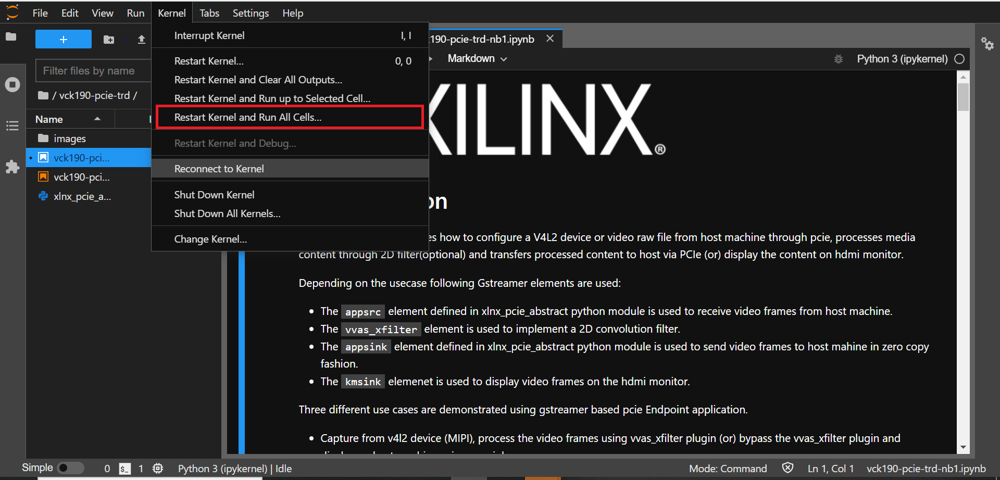

3.3. Run 2D Filter Application¶
Jupyter Notebooks are used to demonstarte the workings of the platform with filter2d accelerator. A network connection is required to run these Notebooks.
3.3.1. Connect to the JupyterLab Server¶
Follow these steps to boot the board into Linux. These steps can be skipped if you are already at the Linux prompt xilinx-vck190-20222
Ensure all steps under the section Board Setup are verified.
Insert the prepared micro SD card into the Versal SD card slot (refer to the image in Board Setup)
Have the UART0 terminal emulator tab connected.
Turn ON power switch SW13.
On Versal UART0 terminal, you would see the Versal device booting from the micro SD card, starting with the message “Xilinx Versal Platform Loader and Manager”
In about 60 seconds boot is complete. Observe the Linux prompt xilinx-vck190-20222 and autostart of JupyterLab server as shown in the example below:
xilinx-vck190-20222 login: [ 32.678707] trd-dashboard.sh[700]: TRD Dashboard will be running at http://192.168.xx.x:5006/trd-dashboard
[ 43.276906] start-jupyter.sh[710]: [I 2023-03-27 03:04:49.435 ServerApp] jupyterlab | extension was successfully linked.
[ 43.466903] start-jupyter.sh[710]: [I 2023-03-27 03:04:49.625 LabApp] JupyterLab extension loaded from /usr/lib/python3.9/site-packages/jupyterlab
[ 43.467175] start-jupyter.sh[710]: [I 2023-03-27 03:04:49.626 LabApp] JupyterLab application directory is /usr/share/jupyter/lab
[ 43.486329] start-jupyter.sh[710]: [I 2023-03-27 03:04:49.645 ServerApp] jupyterlab | extension was successfully loaded.
[ 43.488982] start-jupyter.sh[710]: [I 2023-03-27 03:04:49.647 ServerApp] Serving notebooks from local directory: /usr/share/notebooks
[ 43.489246] start-jupyter.sh[710]: [I 2023-03-27 03:04:49.648 ServerApp] Jupyter Server 1.13.5 is running at:
[ 43.489410] start-jupyter.sh[710]: [I 2023-03-27 03:04:49.648 ServerApp] http://192.168.xx.x:8888/lab?token=a756968d5f885e7c3bee91ffddb42735bb45a90eb29b1356
[ 43.489540] start-jupyter.sh[710]: [I 2023-03-27 03:04:49.648 ServerApp] or http://127.0.0.1:8888/lab?token=a756968d5f885e7c3bee91ffddb42735bb45a90eb29b1356
[ 43.489711] start-jupyter.sh[710]: [I 2023-03-27 03:04:49.648 ServerApp] Use Control-C to stop this server and shut down all kernels (twice to skip confirmation).
[ 43.515070] start-jupyter.sh[710]: [C 2023-03-27 03:04:49.674 ServerApp]
[ 43.515296] start-jupyter.sh[710]:
[ 43.515404] start-jupyter.sh[710]: To access the server, open this file in a browser:
[ 43.515504] start-jupyter.sh[710]: file:///home/root/.local/share/jupyter/runtime/jpserver-710-open.html
[ 43.515603] start-jupyter.sh[710]: Or copy and paste one of these URLs:
[ 43.515729] start-jupyter.sh[710]: http://192.168.xx.x:8888/lab?token=a756968d5f885e7c3bee91ffddb42735bb45a90eb29b1356
[ 43.515821] start-jupyter.sh[710]: or http://127.0.0.1:8888/lab?token=a756968d5f885e7c3bee91ffddb42735bb45a90eb29b1356
[ 44.586990] trd-dashboard.sh[718]: 2023-03-27 03:04:50,745 Starting Bokeh server version 2.4.2 (running on Tornado 6.1)
[ 44.592878] trd-dashboard.sh[718]: 2023-03-27 03:04:50,751 User authentication hooks NOT provided (default user enabled)
[ 44.604626] trd-dashboard.sh[718]: 2023-03-27 03:04:50,763 Bokeh app running at: http://localhost:5006/trd-dashboard
[ 44.604862] trd-dashboard.sh[718]: 2023-03-27 03:04:50,764 Starting Bokeh server with process id: 718
Copy the above URL http://192.168.xx.x:8888/?token=1f69939d70cdedd044adb64c91d26a75c01da7ad34f8ff03 to the chrome browser.
Note
If for any reason target fails to grab an IP address from the network, jupyter server would fail to issue an URL. In such a case user is recommended to fix the IP address and restart the jupyter server by following below steps till Copy the generated URL onto browser.
systemctl stop jupyter-setup
systemctl start jupyter-setup
To look up the jupyter server IP address and token on the target, run:
journalctl -u jupyter-setup
Users can check status of the systemd service ‘jupyter-setup’ any time for debug info:
xilinx-vck190-20222:~$ systemctl status jupyter-setup * jupyter-setup.service - jupyter setup scripts Loaded: loaded (/lib/systemd/system/jupyter-setup.service; disabled; vendor preset: disabled) Active: active (running) since Fri 2022-11-19 10:12:14 PST; 20min ago Main PID: 879 (start-jupyter.s) Tasks: 3 (limit: 2237) Memory: 125.6M CGroup: /system.slice/jupyter-setup.service |-879 /bin/bash /sbin/start-jupyter.sh `-884 python3 /usr/bin/jupyter-lab --no-browser --allow-root --ip=192.xxx.xx.xx
Note
If you do not see any URL for the Juputer Notebook, you may have to setup a private network. Likely, DHCP is not available to allot the board an IP address. To setup a private network and start the notebook follow the instruction below.
3.3.1.1. Setting up a private network¶
In case of a private network, user can assign a static address within the subnet of the host machine.
Setting up a private network with target board and the host machine for Windows users:
Ensure a direct connection between the windows host machine and the target board using an ethernet cable as shown in the Board Setup section.
In windows, run command prompt as an admisntrator
Press Windows+R to open the “Run” box. Type “cmd” into the box. press Ctrl+Shift+Enter to run the command as an administrator
Run ipconfig on the windows machine to list available ethernet adapters and set a static private ip
# A sample output after executing ipconfig # notice interface "Ethernet" has an auto address assigned with no Default Gateway ipconfig Ethernet adapter Ethernet: Connection-specific DNS Suffix . : Link-local IPv6 Address . . . . . : fe80::1d8d:ac40:ff9b:8d1%21 Autoconfiguration IPv4 Address. . : 169.254.8.209 Subnet Mask . . . . . . . . . . . : 255.255.0.0 Default Gateway . . . . . . . . . : # Set static ip address netsh interface ip set address name="YOUR INTERFACE NAME" static "IP_ADDRESS" "SUBNET_MASK" # Example netsh interface ip set address name="Ethernet" static 10.0.0.1 255.255.255.0
Ensure to boot the target board (VCK190) into Linux
Set a private ip address for the target within the subnet of host machine and verify connectivity.
sudo ifconfig eth0 10.0.0.2 netmask 255.255.255.0 # Perform a ping test to the host form the target ping -c 3 10.0.0.1
Setting up a private network with target board and the host machine for Linux users:
Make a direct connection between the Linux host machine and the target board using an ethernet cable
Run ifconfig on the Linux machine to list available ethernet adapters and set a static private ip
# Example to set an ip 10.0.0.1 to ethernet interface enp2s0: sudo ifconfig enp2s0 10.0.0.1 netmask 255.255.255.0
Ensure to boot the target board (VCK190) into Linux
Set a private ip address for the target within the subnet of host machine and verify connectivity.
sudo ifconfig eth0 10.0.0.2 netmask 255.255.255.0 # Perform a ping test to the host form the target ping -c 3 10.0.0.1
To start Jupyter Notebook run
sudo systemctl start jupyter-setup sudo jupyter-lab list
3.3.1.2. Start the Notebook¶
Note: This demo is tested with Chrome browser only.
To connect to the jupyter-server and start the Notebook, copy the generated URL with token on the prompt of Versal target and paste it to the Chrome browser address bar of the laptop, for example:
http://192.168.1.77:8888/?token=06cfb958c61eb0581bb759f40e3a4c3a6252cef3b7075449If you have lost the URL, to look up the jupyter server IP address and token on the target, run:
sudo jupyter-lab list
3.3.2. Run the Jupyter Notebooks¶
This TRD includes the following jupyter notebooks:
vck190-pcie-trd-nb1.ipynb: Demonstrates how to configure a V4L2 device or video raw file from host machine through pcie, processes media content through 2D filter(optional) and transfers processed content to host via PCIe (or) display the content on HDMI monitor.
> NOTE : For PCIe use-cases, host application need to be run prior to running notebook (i.e. vck190-pcie-trd-nb1) on end point. The steps to run host application are documented in the following section.
vck190-pcie-trd-nb2.ipynb: Demonstrates how to capture video from a MIPI device, processes it through 2D convolution filter accelerator and display the output on a monitor using a DRM/KMS display device. This notebook uses the GStreamer multimedia framework. In addition, the memory bandwidth is measured and plotted in a parallel notebook.
To run the notebooks, follow the below steps:
On the left pane of the browser, 2 notebooks are available under the folder PCIe TRD.
Double click to open the notebook
Select ‘Kernel’ → ‘Restart Kernel and Run All Cells’ from the top menu bar to run the demo.
Scroll down to the end of the notebook to see the video output.
Click the rectangular icon to interrupt the kernel and stop the video stream.
Select ‘Kernel’ → ‘Shutdown Kernel’ → close the notebook tab and move to the next notebook.

{kind=link}
Note1: Rerunning a TRD notebook may have spurious behavior, this is because software commands are designed to run in order and may not behave as expected in iterative runs when the kernel is not restarted. In practice, there are some command sequences that can be regressed, but the safest thing is to restart the Jupyter Notebook kernel with ‘kernel’ → ‘Interrupt kernel’ , followed by ‘kernel’ → ‘Restart Kernel and Run All Cells’ when rerunning a notebook.
Note2: Jupyter-setup is expected to be started with root privilages ‘sudo systemctl start jupyter-setup’. If not started with root permission for the first atempt, then post install scripts will fail to execute and dot may throw an error creating a graph in png format. This can be resolved by executing ‘dot -c’ at the linux prompt .
3.3.3. Run Host and End-Point applications¶
As described in the previous sections host application provides control information to the Endpoint to run any usecase.
3.3.3.1. Run Host application¶
Note: Make sure, HOST application is launched before starting EP application.
Here are list of control information passed to endpoint :
-- Usecase to run. -- Resolution. -- Filter type. -- FPS (Default 30fps). -- Rawvideofile (with abosolute path of video file to play).
This example demonstrates Usecase-1(MIPI –> 2D Image Processing –> Appsink(PCIe))
First run Host Machine Software setup steps,Then execute pcie_host_app application as following.
# ./pcie_host_appFrom the eight usecases select any one of the usecase or 7 to quit application.
# ./pcie_host_app Enter 1 to run : MIPI-->filter2d-->pciesink--> displayonhost Enter 2 to run : MIPI-->dpu-->pciesink--> displayonhost Enter 3 to run : MIPI-->pciesink--> displayonhost Enter 4 to run : RawVideofilefromHost-->pciesrc-->filter2d-->pciesink-->displayonhost Enter 5 to run : RawVideofilefromHost--> pciesrc-->pciesink-->displayonhost Enter 6 to run : RawVideofilefromHost--> pciesrc-->filter2d-->kmssink Enter 7 to run : RawVideofilefromHost--> pciesrc-->dpu-->kmssink Enter 8 to run : RawVideofilefromHost--> pciesrc-->kmssink Enter 9 to : Exit application Enter your choice:1
Select desired resolution (Enter 1 or 2 ):
# ./pcie_host_app Enter 1 to run : MIPI-->filter2d-->pciesink--> displayonhost Enter 2 to run : MIPI-->dpu-->pciesink--> displayonhost Enter 3 to run : MIPI-->pciesink--> displayonhost Enter 4 to run : RawVideofilefromHost-->pciesrc-->filter2d-->pciesink-->displayonhost Enter 5 to run : RawVideofilefromHost--> pciesrc-->pciesink-->displayonhost Enter 6 to run : RawVideofilefromHost--> pciesrc-->filter2d-->kmssink Enter 7 to run : RawVideofilefromHost--> pciesrc-->dpu-->kmssink Enter 8 to run : RawVideofilefromHost--> pciesrc-->kmssink Enter 9 to : Exit application Enter your choice:1 select the resolution 1. 3840x2160 2. 1920x1080 Enter your choice:1
From below table select anyone filter-type (Enter 0 - 10)
# ./pcie_host_app Enter 1 to run : MIPI-->filter2d-->pciesink--> displayonhost Enter 2 to run : MIPI-->dpu-->pciesink--> displayonhost Enter 3 to run : MIPI-->pciesink--> displayonhost Enter 4 to run : RawVideofilefromHost-->pciesrc-->filter2d-->pciesink-->displayonhost Enter 5 to run : RawVideofilefromHost--> pciesrc-->pciesink-->displayonhost Enter 6 to run : RawVideofilefromHost--> pciesrc-->filter2d-->kmssink Enter 7 to run : RawVideofilefromHost--> pciesrc-->dpu-->kmssink Enter 8 to run : RawVideofilefromHost--> pciesrc-->kmssink Enter 9 to : Exit application Enter your choice:1 select the resolution 1. 3840x2160 2. 1920x1080 Enter your choice:1 Enter filter type value 0-10:9
When application prompts below prints launch (vck190-pcie-trd-nb1.ipynb) jupyter notebook.
Note: Set ‘res’ variable in vck190-pcie-trd-nb1.ipynb to appropriate value to ensure resolution is same at host and end point.
Please run 'vck190-pcie-trd-nb1.ipynb' jupyter notebook from endpoint (To launch endpoint application) To quit usecase, hit <q+enter> from host
Note: Only for MIPI usecase , hit <q+enter> from host to quit.
From Usecase-4, User is expected to pass rawvideo file as an additional parameter.
Enter input filename with absolute path to play and depending on rawvideo file size usecases stops
# ./pcie_host_app Enter 1 to run : MIPI-->filter2d-->pciesink--> displayonhost Enter 2 to run : MIPI-->dpu-->pciesink--> displayonhost Enter 3 to run : MIPI-->pciesink--> displayonhost Enter 4 to run : RawVideofilefromHost-->pciesrc-->filter2d-->pciesink-->displayonhost Enter 5 to run : RawVideofilefromHost--> pciesrc-->pciesink-->displayonhost Enter 6 to run : RawVideofilefromHost--> pciesrc-->filter2d-->kmssink Enter 7 to run : RawVideofilefromHost--> pciesrc-->dpu-->kmssink Enter 8 to run : RawVideofilefromHost--> pciesrc-->kmssink Enter 9 to : Exit application Enter your choice : 4 select the resolution 1. 3840x2160 2. 1920x1080 Enter your choice:2 Enter input filename with path to transfer: ~/xxx.yuv
3.3.3.2. Run end-point application¶
Launch vck190-pcie-trd-nb1.ipynb jupyter notebook. (For MIPI use case modify ‘res’ variable same as one selected at host application).
Note: Endpoint application exits after running the usecase, Hence restart vck190-pcie-trd-nb1.ipynb jupyter notebook to relaunch the endpoint application.
Following Table lists the supported filter configuration in the design.
Filter_type |
Filter name |
|---|---|
0 |
Blur filter |
1 |
Edge filter |
2 |
Horizontal Edge filter |
3 |
Vertical Edge filter |
4 |
Emboss filter |
5 |
HGRAD filter |
6 |
VGRAD filter |
7 |
Identity filter |
8 |
Sharpe filter |
9 |
Horizontal Sobel filter |
10 |
Vertical Sobel filter |
A filter version of big buck bunny video will start playing on the monitor.
Licensed under the Apache License, Version 2.0 (the “License”); you may not use this file except in compliance with the License.
You may obtain a copy of the License at http://www.apache.org/licenses/LICENSE-2.0
Unless required by applicable law or agreed to in writing, software distributed under the License is distributed on an “AS IS” BASIS, WITHOUT WARRANTIES OR CONDITIONS OF ANY KIND, either express or implied. See the License for the specific language governing permissions and limitations under the License.